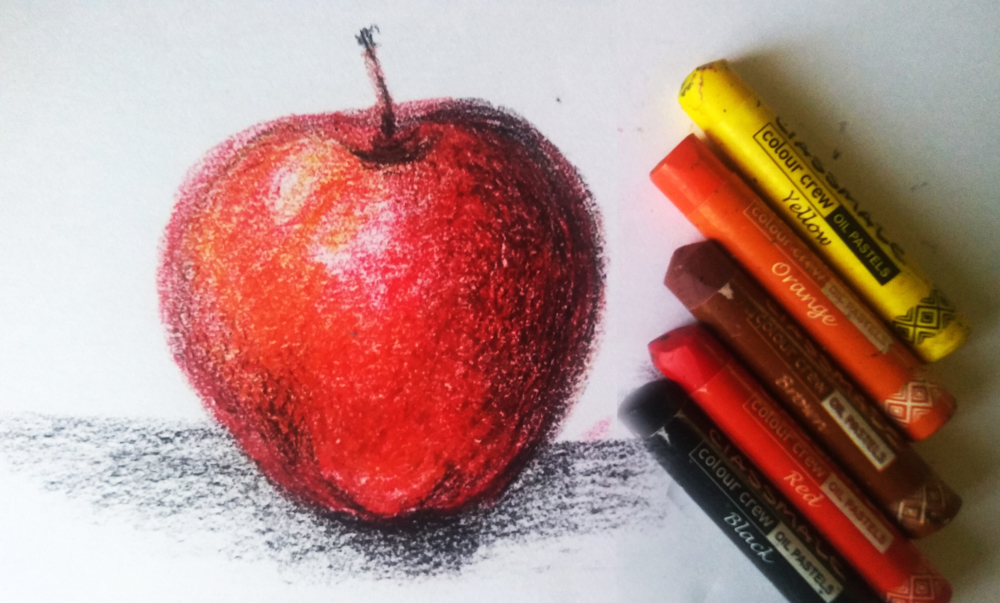
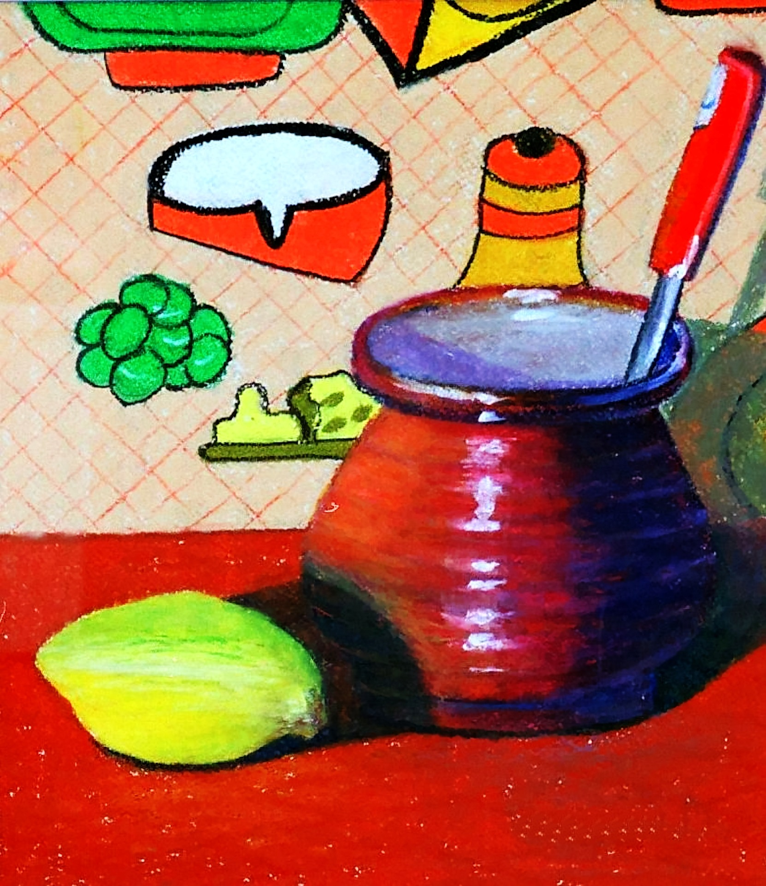
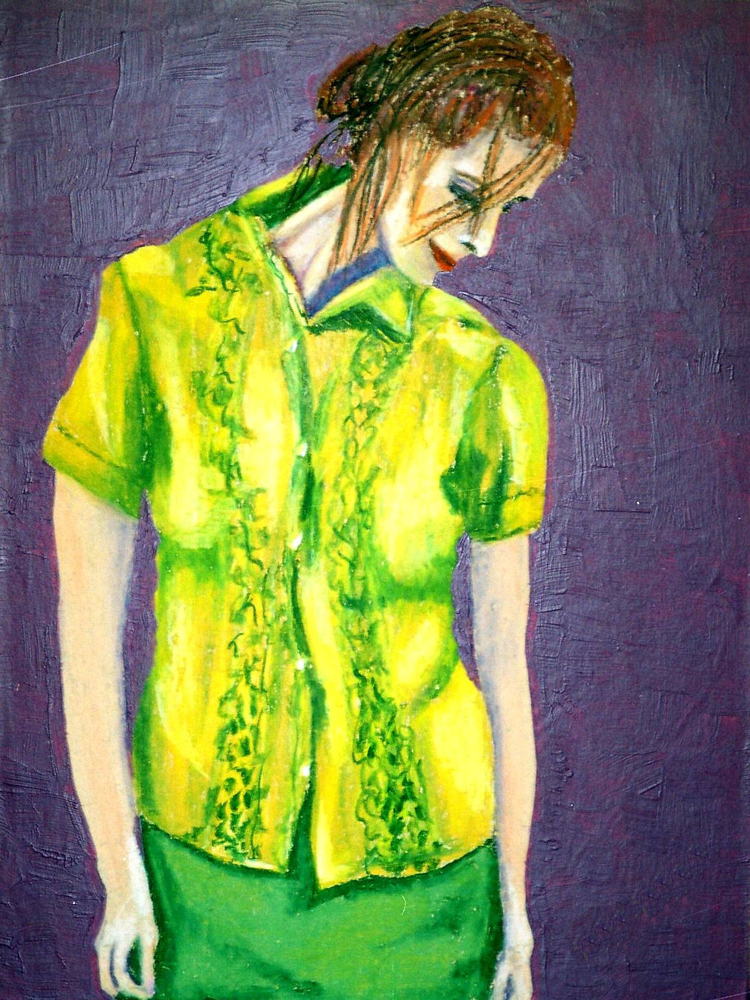
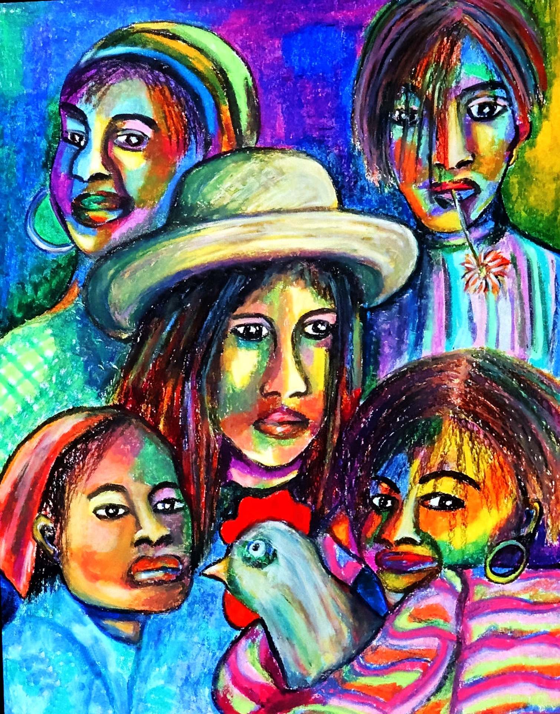
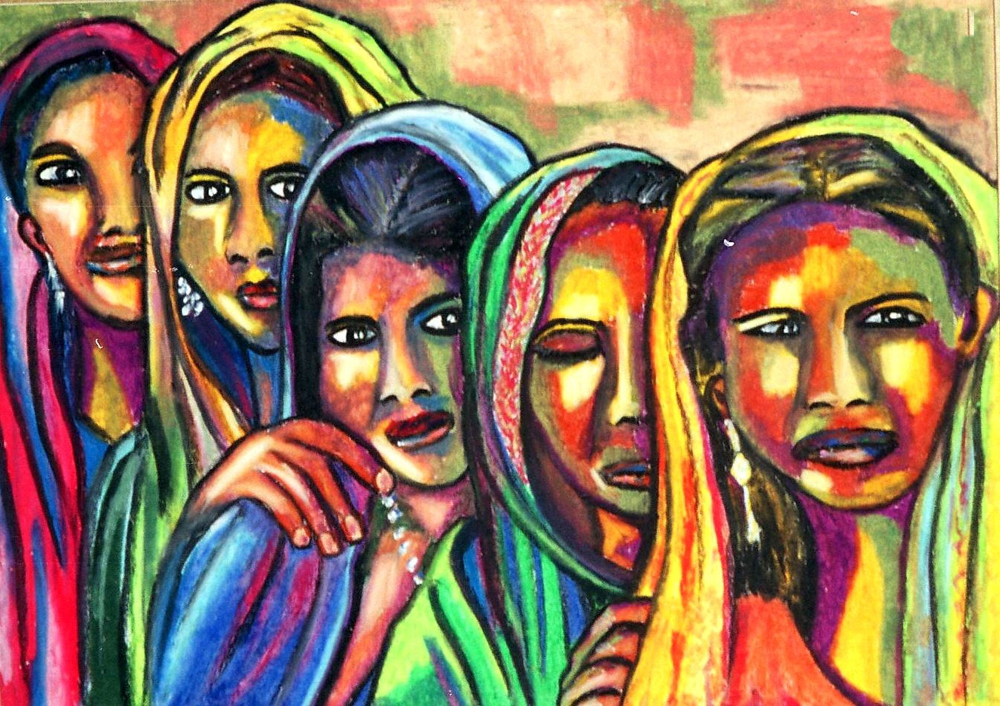

Oil Pastels
What are Oil Pastels?
Oil pastels come in a crayon or stick form and are made of pigments combined with a binder.
The binder is a mixture of waxes and mineral oils, so you get a type of soft and slightly somewhat greasy stick that does not dry.
There are other similar drawing mediums like crayons and pastel sticks.
There are also different types of pastels including soft pastels (or pastel sticks), hard pastels, pencil pastels, and pan pastels.
Using oil pastels is fun and easy to do, and is something that can be done by both the young and old, beginner and professional.
However, just like everything else you need to learn a few techniques and practice until you
can create a good art piece.
Do not give up on your first try! Oil pastel painting can be rewarding once you get the hang of it.
Not only that, but the oil pastels themselves are affordable, easy to transport, simple to use,
and easy to keep clean.
With a little practice, you will be producing wonderful art that has texture and beautiful colors.

Why Oil Pastel Painting?
Oil painting takes a bit of preparation and requires a variety of materials to get started, whereas using oil pastels is quick and easy and does not require any brushes,
solvents, or other items apart from some paper and
the oil pastels themselves.
Oil pastels are, therefore, great to travel with, with no mess and no fuss. Oil pastels are also more affordable than many other art mediums.
Below are a few more advantages of using oil pastels:
- You can use oil pastels on canvas, paper, and wood.
- These pastels can be used for a variety of techniques
- Oil pastels can be scratched off, built up, blended, used to look like wet paint, or used dry.
- You can use the oil pastels immediately and they are easy to use.

Some Oil Pastel ArtWorks


